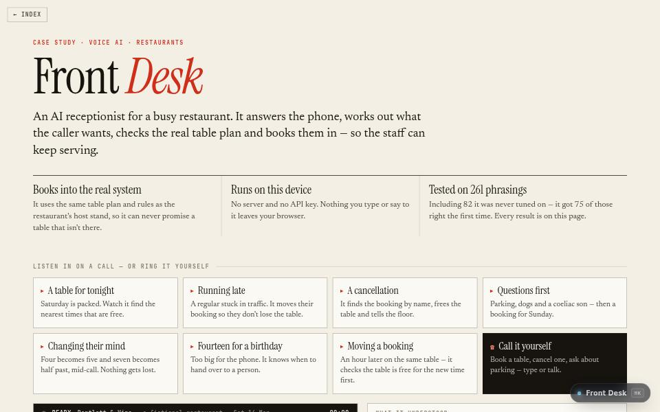

AI product · about 4 min · The Product Archipelago
Front Desk
An AI phone receptionist for a busy restaurant. It checks the real table plan, offers the nearest free times and books straight into the host-stand system.

The problem
Restaurants miss calls during service, and whoever does answer should be serving.
What it does
- Understands booking requests, typed or spoken, and asks for one thing at a time
- Checks the real table plan and offers the nearest free times when the one asked for has gone
- Writes allergies where the kitchen will see them, and hands over to a person when it should
The most interesting decision
A purpose-built parser, not a large language model
For one narrow job a parser is fast, costs nothing to run, cannot make up a booking, and every phrasing can be tested. A small on-device model is asked only when the parser finds nothing at all, and even then it only suggests the intent.
Where the AI is, and where it isn’t
The model
- A small on-device embedding model, asked only when the parser finds nothing at all
- Even then it only suggests the intent: whether this is a booking request at all
Ordinary code
- A purpose-built parser reads party size, day, time, name and number, and the exact words each came from
- The Covers table engine is asked about every table, and asked again at the moment of booking
- Hands over to a person for more than ten guests, a complaint, a name it cannot find twice, or three misunderstandings in a row
What keeps it honest
- Reads everything back before it books
- Held-out phrasings: 75 of 82 on the first run, and the tests fail if the score ever drops below that
- Four hundred random callers on every test run: no double bookings, nothing after closing, nothing in the past
Not built yet
- No phone line yet: a telephony provider would stream call audio into the same text pipeline
- Confirmation texts are drafted, not sent
Built with
- Purpose-built language parser
- Whisper speech recognition, on device
- MiniLM embeddings
- Covers table engine
- Web Audio
Evidence
75 of 82 new phrasings understood first time; 400 random callers, no double-bookings. Read its tests
Its world
A restaurant terrace beneath a telephone tower that never stops listening.